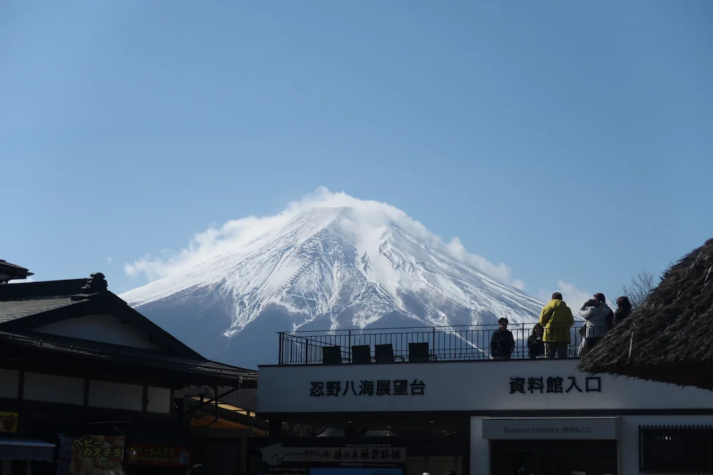

About
Mount Fuji is Japan's highest mountain, standing at 3,776 meters. It is known for its beautiful symmetrical shape and snow-capped peak.
Weather
Temperature: 8°C
Wind Speed: 10 km/h
Wind Chill:

Mount Fuji is Japan's highest mountain, standing at 3,776 meters. It is known for its beautiful symmetrical shape and snow-capped peak.
Temperature: 8°C
Wind Speed: 10 km/h
Wind Chill: